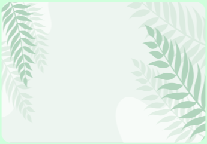

GREEN-NOVA
Sobre Nosotros
En Green-Nova creemos que la naturaleza transforma los espacios y la vida de las personas. Somos una comunidad apasionada por acercar plantas saludables, sostenibles y llenas de vida a cada hogar.
Conoce nuestra historiaGREEN-NOVA
En Green-Nova creemos que la naturaleza transforma los espacios y la vida de las personas. Somos una comunidad apasionada por acercar plantas saludables, sostenibles y llenas de vida a cada hogar.
Conoce nuestra historia

NUESTRA HISTORIA
Green-Nova nació de la idea de que cualquier espacio puede convertirse en un refugio verde. Lo que comenzó como un pequeño vivero familiar hoy es una comunidad que conecta a miles de personas con la naturaleza.
Seleccionamos cada planta con cuidado, acompañamos a nuestros clientes en su cultivo y trabajamos cada día para que la frescura de la naturaleza llegue a más hogares.